实操教程
（以检测+分割为例）
1.用户检测需求确认
（1）参考“工具介绍”章节，了解AIDI模块应用场景和不同输出结果区别 （2）了解终端用户检测需求 （3）根据终端用户需求，构建AIDI检测方案。
示例工程项目需求：产品属于冲压件，在冲压过程中会产生破损缺陷，需要视觉检测出NG产品，以便踢料工位将NG产品踢出。
下文以“检测+分割”检测方案为例进行实操演示，首先使用“检测”模块检出产品位置，然后使用“分割”模块检测产品上缺陷位置
2.AIDI工程建立建立
（1）AIDI左上角选择”新建工程“ （2）本地工作区管理中选择“加载其他”，选择本地文件，完成工作区创建。 （3）右击工作区文件创建新的工程，输入新建工程名字。 为了便于管理和维护，项目现场工程通常会创建在一个工作区下。
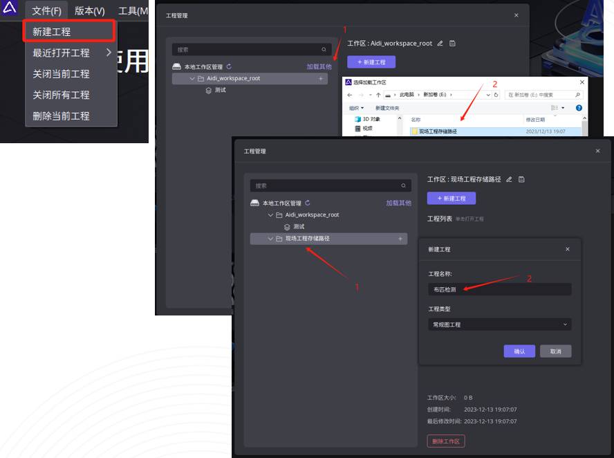
3.数据导入
在”输入“节点， 点击“导入图像”，添加训练模型所必须的图像数据。
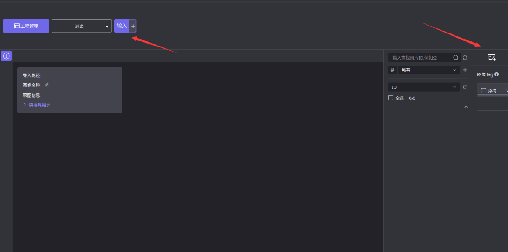
4.选择模块
点击“输入”模块后的“+”，根据项目需求，选择对应模块。下图以“检测”模块为例。
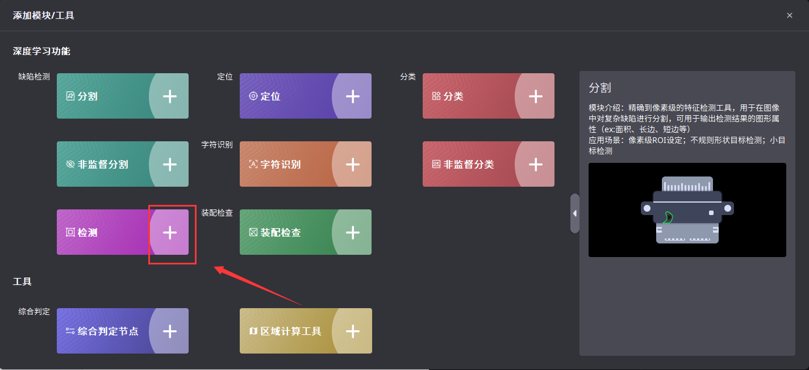
5.视图窗口设置
（1）视图窗口用于选定产品/缺陷的检测区域。（产品/缺陷可能出现在图像上任何位置，则不需要更改检测区域，直接点击应用即可） （2）确定检测区域后，点击应用。 （3）进入模块后，视图范围外区域会被屏蔽，避免视图外区域对模型识别效果产生干扰。
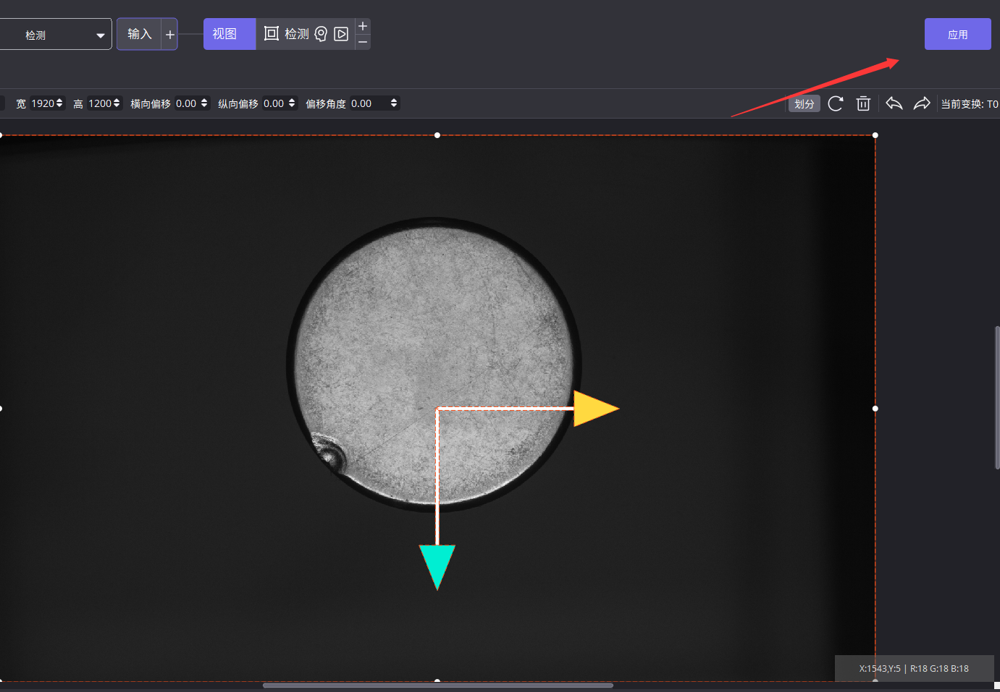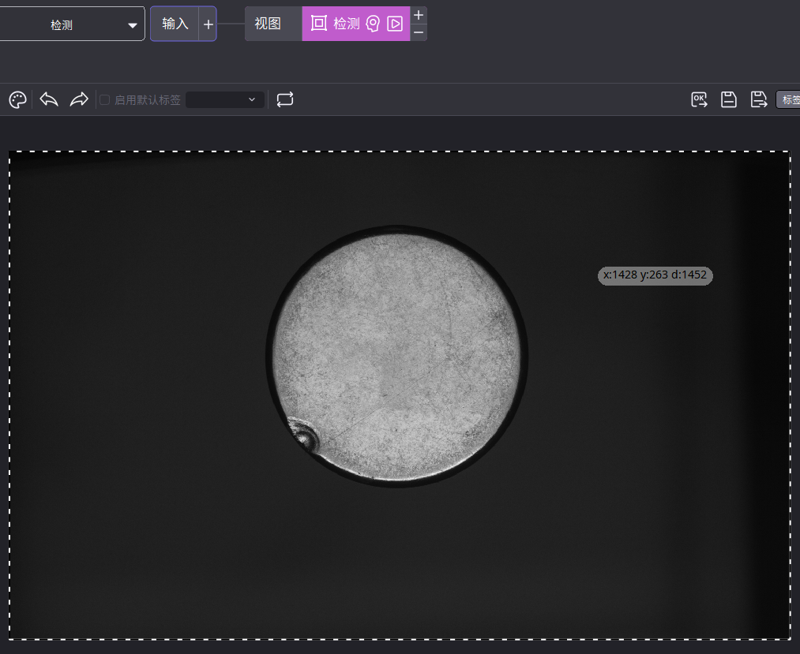
6.数据标注
（1）设置标签：在标注管理区的标签管理内逐一设置好需要标注的缺陷或目标名称。 （2）点击标签，可以进行修改、删除、合并等功能。
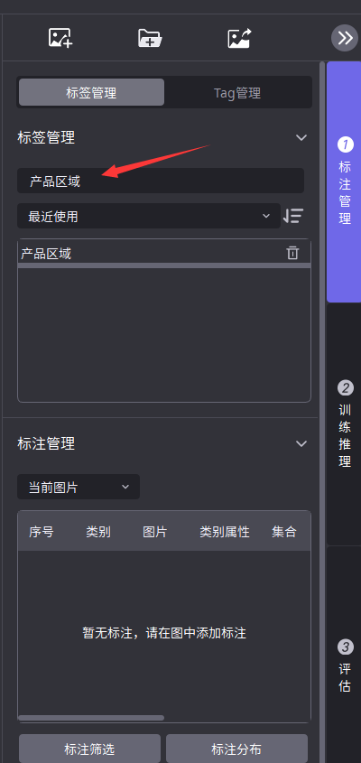
（3）标注方式 自由框：单击后斜拉画出任意矩形框标注。弹出标签框后选择标签名称，标注完成。 标准框：点击直接放置固定大小的矩形框标注，可以调整矩形框的宽、高。弹出标签框后选择标签名称，标注完成。 标注框尽量贴紧需要检测区域边缘。CTRL+S或S键保存标注，保存后会自动跳转到下一张图片
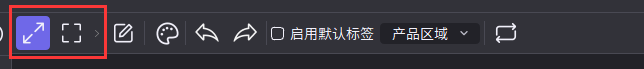
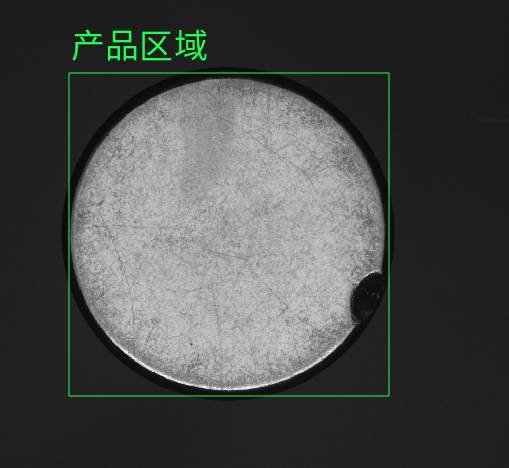
7.训练参数
（1）训练集划分 方式1：对所有图像完成标注后，在“模型训练助手”中，选择“数据划分”。 软件可以根据设置比例，随机挑选制定比例的训练集和测试。如图中比例为70%，代表标注的数据中70%作为训练集，30%作为测试集
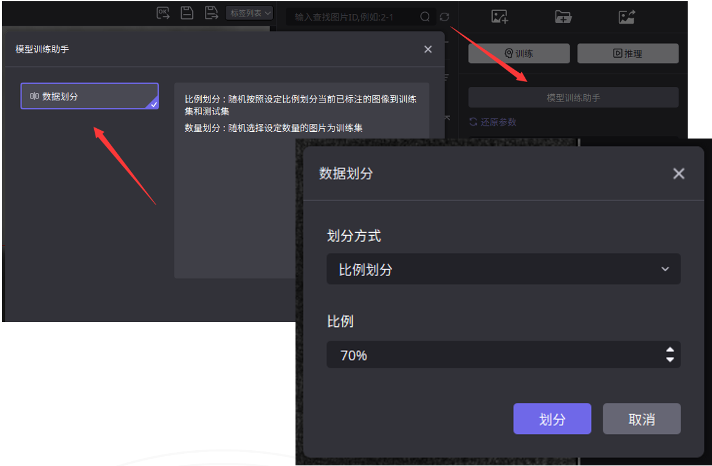
方式2：在图像列表中，鼠标右击图像，加入训练集。 模型第一次训练完成后，需要采用“方式2”人工挑选4-5张具有代表性过/漏检图像，增加进训练集中进行优化，不能使用“方式1”挑选训练集。 如果模型效果不佳，需要采用方式2多次挑选图像进训练集，多次进行模型优化。
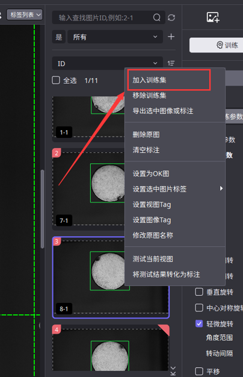
训练集数据尽量满足以下要求： 1、类别完备：训练集中包含各种缺陷类型 2、缺陷形态完备：如缺陷形状、大小、位置、角度、亮度、对比度等尽可能全。每种形态最低数量是50张 3、单工程中图像尺寸尽可能一致 4、明显一样的缺陷图像可以移除 5、训练模型，同一种缺陷建议50张图像起
（2）训练参数设置 在“训练参数/推理参数”中，选择合适的参数进行模型训练/推理。 训练轮数：常用设置范围在400-2000之间，训练轮数采用逐步增加方式。 如果训练过程曲线没有拟合，采用每次在原来训练轮数上增加400次训练。现场常用训练轮数为1200次。 训练批次：设置几张训练图像为一批，进行模型训练。批次越大，显存占用越高，模型效果可以提升。 最大边长：设定图像长边的尺寸缩放至指定尺寸，短边等比例缩放。 假如图像大小为1024512，参数设置为512后，输入模型的图像尺寸为512256，该图像最大设置参数为1024。 模型架构：快速检测，模型结构简易，训练/推理时间少，常用于快速产品粗定位 高精度检测，模型结构复杂，训练/推理时间多，缺陷检测难度高场景
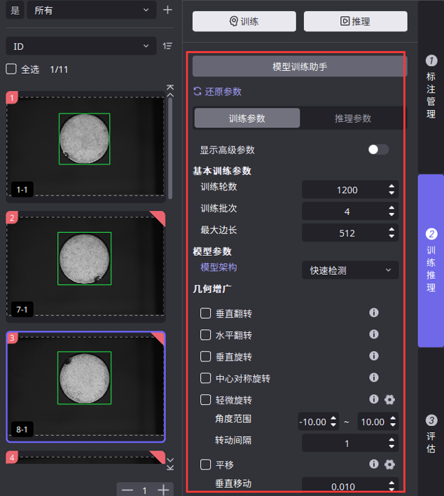
增广参数：通过将训练集图片按照设置方式进行增广，训练过程中训练集按照参数随机变换，增加模型对不同状态缺陷识别能力。鼠标放置在！图标上 ，可以查看参数效果示例。
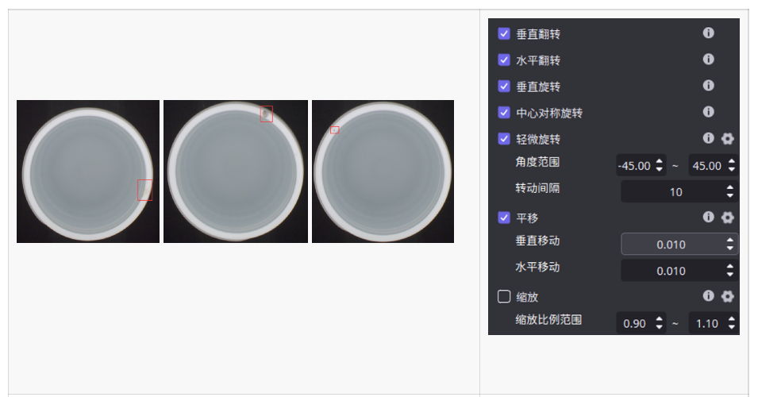 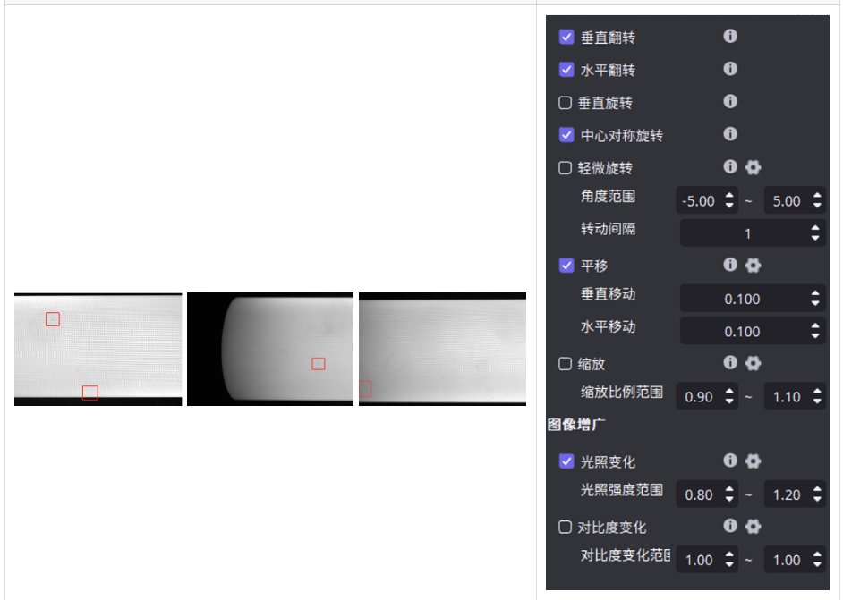
（3）训练/测试 训练按钮：完成训练参数设置后，点击训练按钮。训练完成后会自动进行一次测试，或者点击测试按钮进行测试。
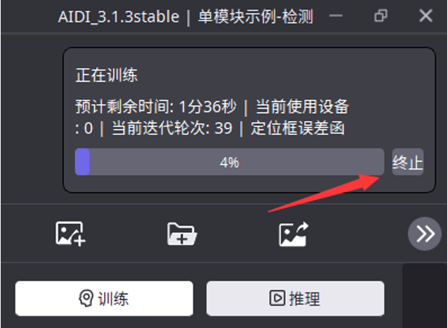 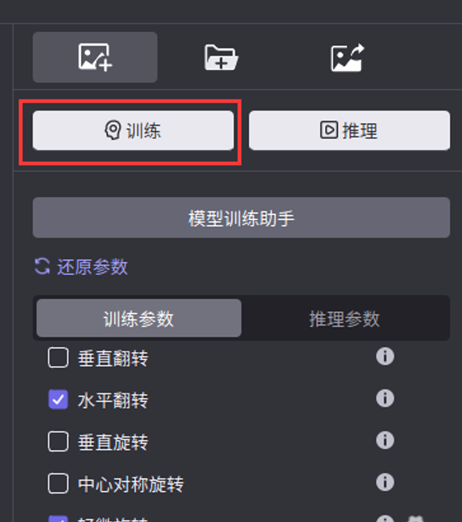
训练过程中，需要停止训练情况下。 可以点击右上角训练进度条中“终止”按钮，终止模型训练。 项目现场不要中途取消模型训练，会导致效果不佳。
8.推理参数设置
推理模式：快速启动，启动速度快，推理速度一般；（一般场景，使用模式） 极速推理，第一次启动慢，并非软件卡死，推理速度最快；（高速场景下，使用模式。可能造成识别结果不完整） 极速推理高精度，第一次启动慢，并非软件卡死，推理速度介于快速启动和极速推理之间 最大目标数：设置推理结果最大数量。 当图像被背景干扰，检测到多个结果框时，可以减小该值的设定，过滤掉得分较低检测出结果 目标交叠率：多个检测框重叠时，重叠率不超过此值。 当同一个位置出现多个检测结果重叠时，可以减小该值的设定 特征阈值：可以对不同类别缺陷的面积，最小外接矩形长边/短边，范围进行过滤。
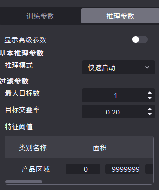
9.在评估页面，查看测试效果
“训练过程曲线”：定位框误差函数：数值越小，识别精度越高
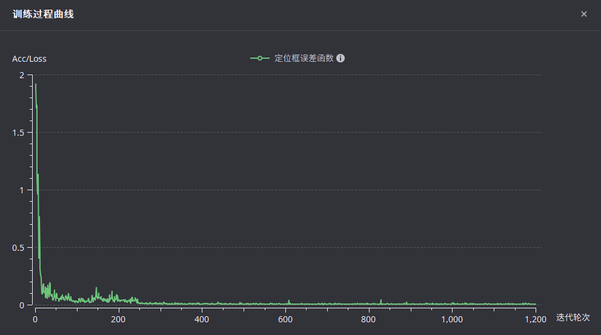
“混淆矩阵“：查看人工标注缺陷和模型识别结果类别，点击对应数字可以快速筛选出对应图像 矩阵横向：人工标注缺陷类别 矩阵纵向：模型测试缺陷类别 区域级：对缺陷标注区域，模型识别区域进行计算。重叠率小于0.3代表该区域模型漏检。 图片级：对整张图像进行结果判定。
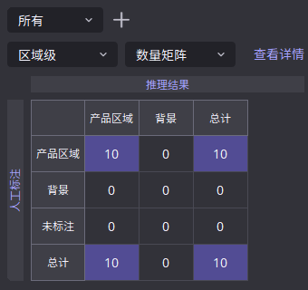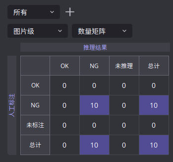
模型详情：单图测试耗用于评估项目模型推理时间，判断否能达到现场节拍需求重要参数。
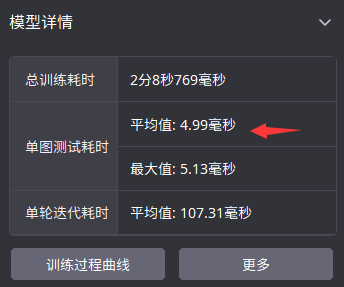
10.增加模块
（1）点击模块后“+”添加其他模块，将上一个模块识别结果作为下一个模块检测区域。下图“检测”模块后，增加“分割”模块为例。
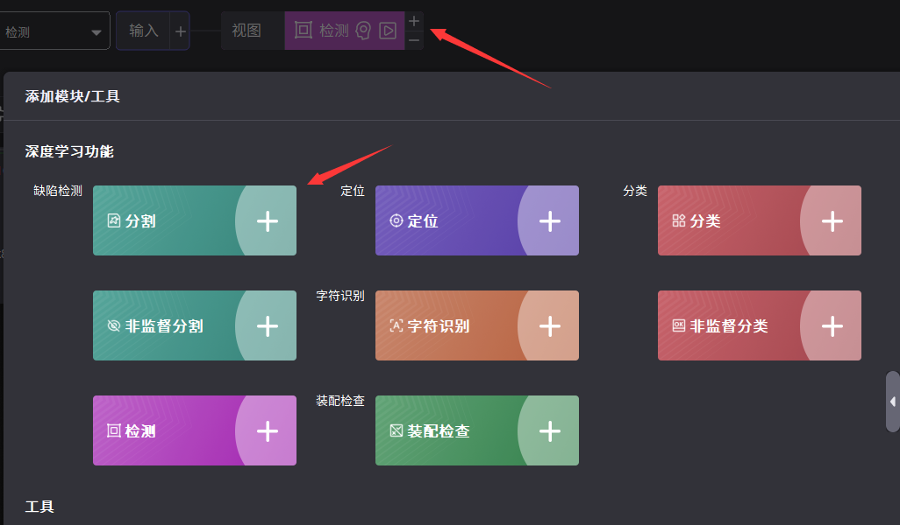
（2）在“分割”视图窗口中，可以对上一个检测结果的“宽”，“高”，“横向偏移”，“纵向偏移”，“偏移角度”参数进行设置。 比如前一个“检测”模块识别框尺寸存在波动，下一个模块视图窗口区域通常会设置固定的“宽”，“高”参数，保证输入分割模块区域大小一致。然后点击“应用”转到“分割”模块中进行缺陷标注，训练。
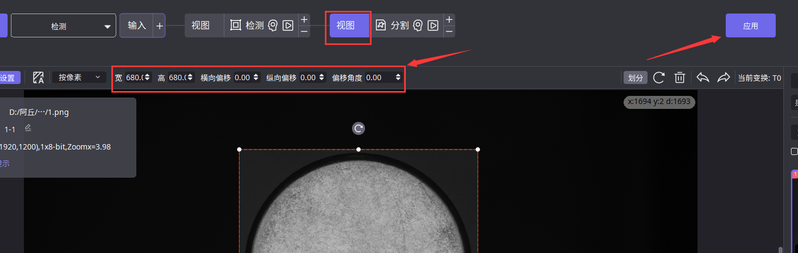
（3）在模块中参考“检测模块”步骤，进行缺陷标注，训练参数设置，测试参数设置，模型结果查看
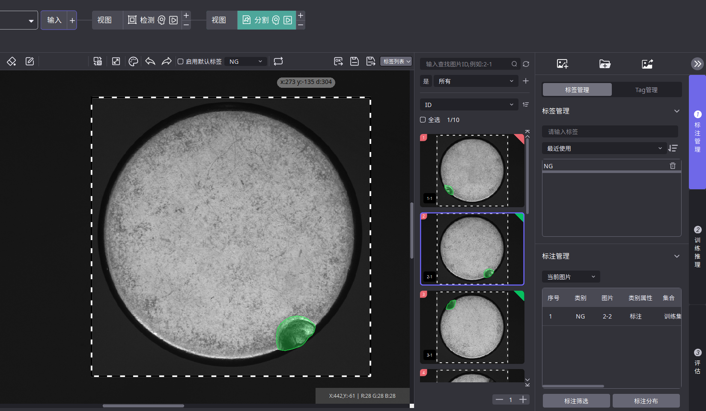
11.综合判定
AI模块检测完成后，添加综合判定节点模块。可以对所有AI检测结果设置过滤条件项，满足条件缺陷判为指定类别，不满组条件缺陷判为其他类别，最终输出AIDI的综合判定结果。 如下图所示，在分割AI模块后添加综合判定节点。
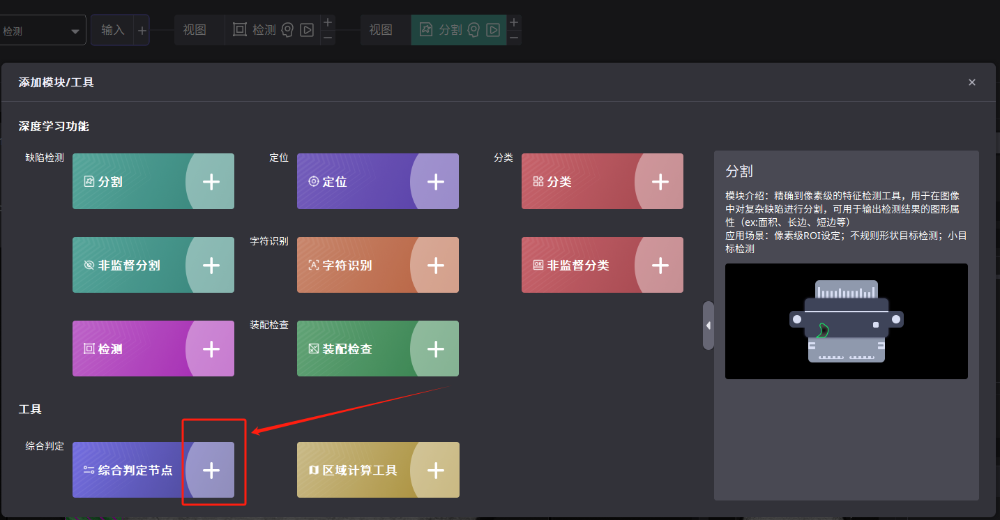
选择进入综合判定的AI模块，然后在软件右侧选择“自定义标准”。
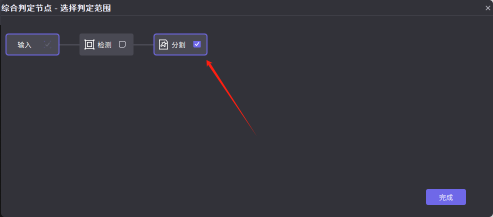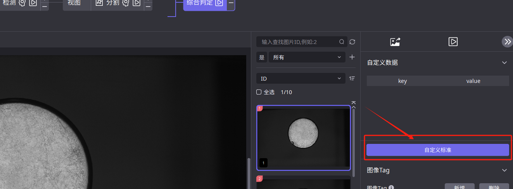
自定义标注框中，选择判断为NG标注。下图为将分割模块中，缺陷面积大于50像素产品判为NG，不满足标准的缺陷判为other。
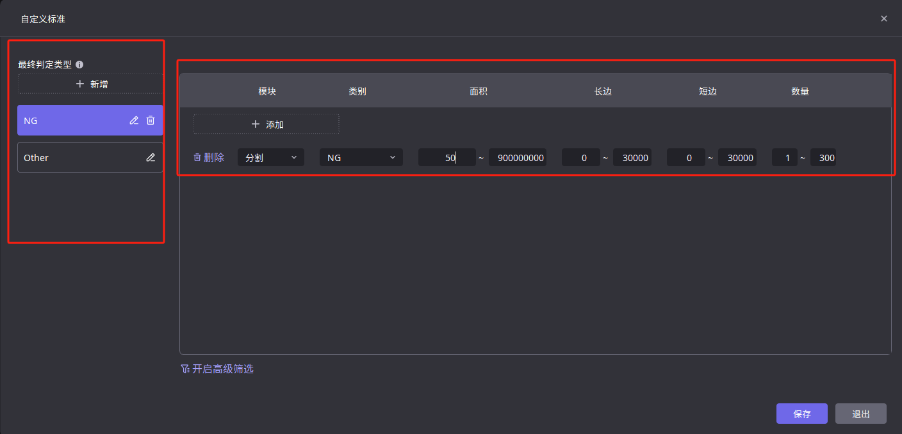
点击测试按钮，即可查看判断结果。
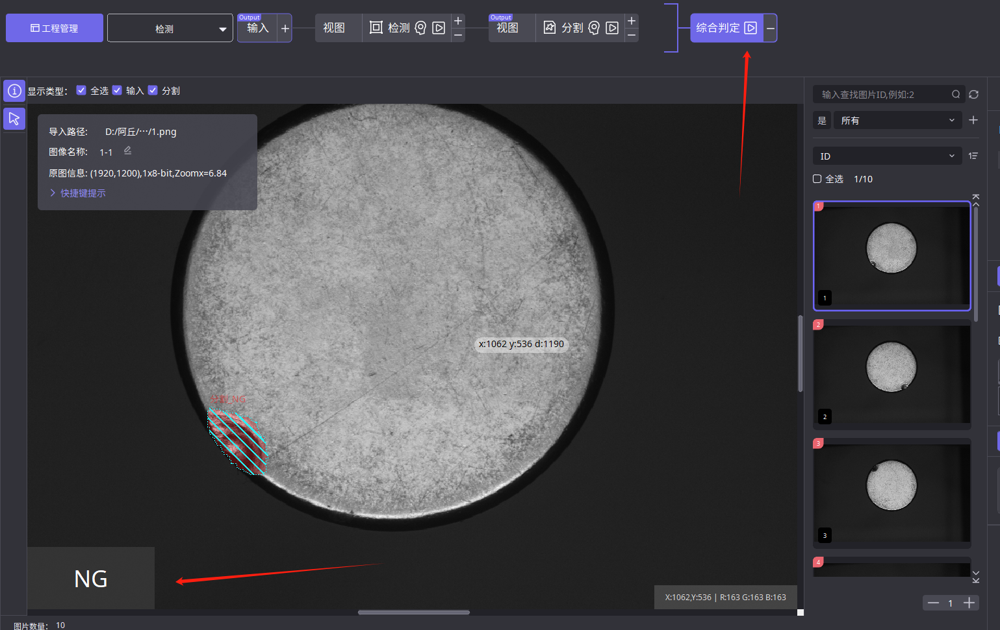
12.工厂模式
使用“工厂模式”，可以对大批量图像进行离线测试。图像通过“输入”模块输入，经过每个AI模块进行推理后，综合判定模块进行汇总/判定，获得模型的最终结果。具体操作如下所示： 在工具栏中选择“工厂模式”。
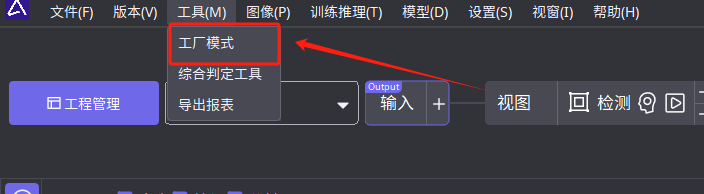
导入测试图像，点击“全局推理”按钮，显示软件最终推理结果。
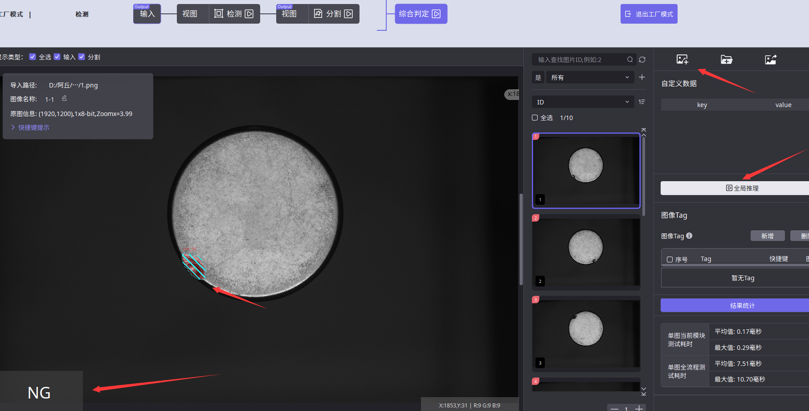
点击其他AI模块，可以显示图像在其他模块中推理结果，便于现场排查问题。
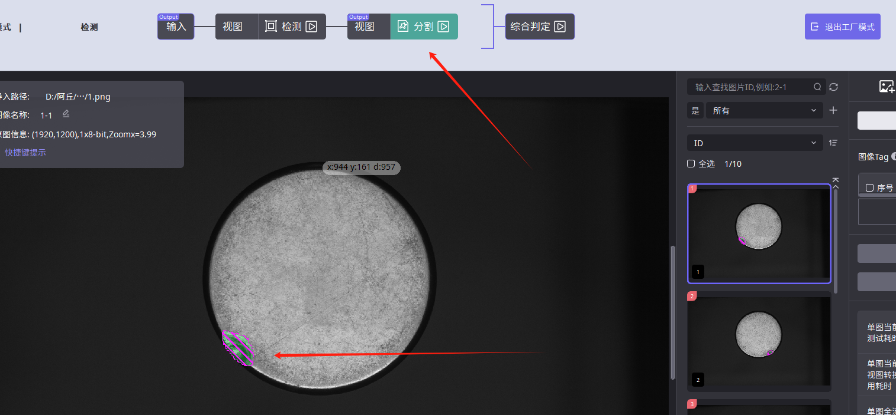
13.导出模型
在软件中使用大量图像测试，模型检测效果较好。选择“模型导出”选项，设置“存储路径”和“模型名称”。模型文件保存到指定路径中，方便现场部署和使用。
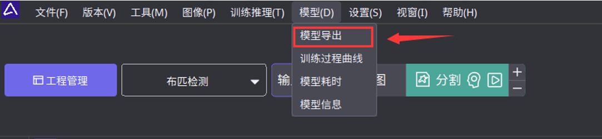 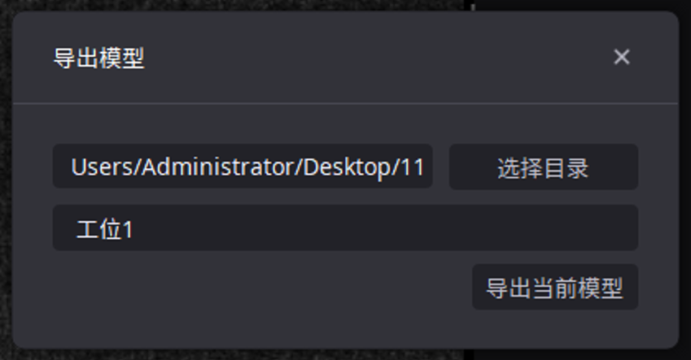
14.二次开发
模型集成到视觉系统软件中，参考“AIDI二次开发指南”或打开“AIDI-帮助-开发文档”进行查看。